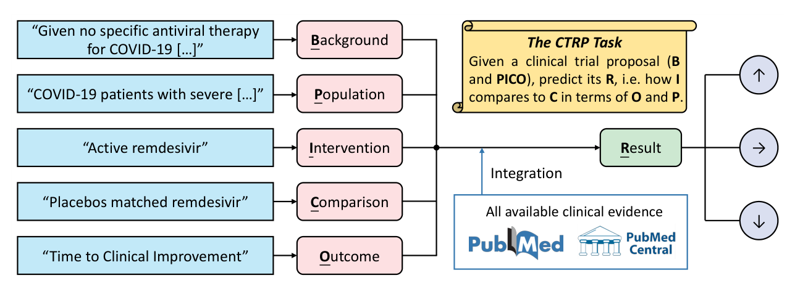
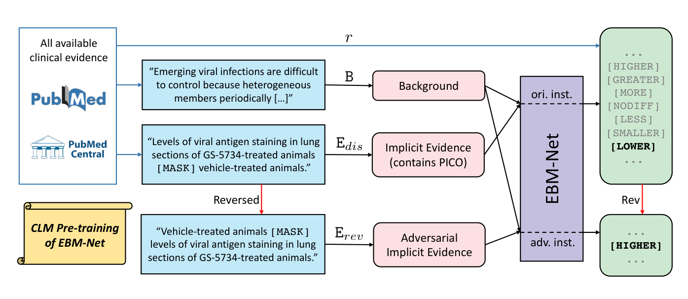
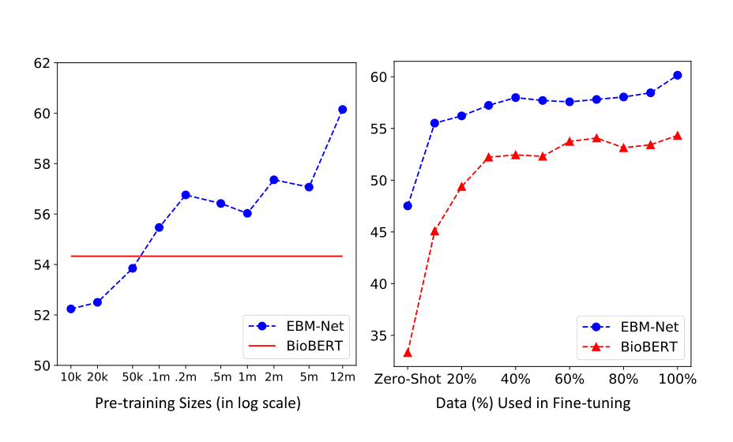
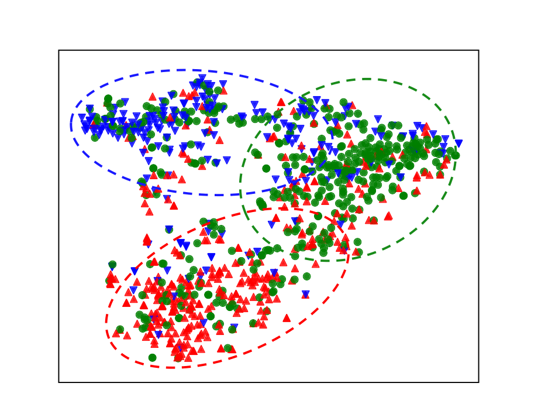

AI for Evidence Utilization · Evidence Integration
Predicting Clinical Trial Results by Implicit Evidence Integration
Qiao Jin, Chuanqi Tan, Mosha Chen, Xiaozhong Liu, Songfang Huang
EMNLP 2020
These slides were generated with the help of AI and may contain errors.
01Motivation
Most clinical trials fail, at considerable cost and risk
- Trials are the evidence base of medicine, and they carry enormous cost and risk.
- One study reports that about 86.2% of clinical trials fail to meet their goals.
- If a proposal’s likely result could be estimated beforehand, trial design could be prioritized before the spend.
02Task
A new task: Clinical Trial Result Prediction
- The model reads a PICO-formatted proposal — Population, Intervention, Comparison, Outcome — with its background.
- It predicts how the intervention group compares with the comparison group on the measured outcome.

03Method
EBM-Net learns from unlabelled comparative sentences in the literature
- Structured clinical evidence is prohibitively costly to annotate at scale.
- 12 million comparative sentences from PubMed and PMC implicitly contain PICOs and their results.
- Reversing an example flips its label, giving free adversarial supervision for the direction of a comparison.

04Result
EBM-Net exceeds BioBERT by 10.7% relative macro-F1
- EBM-Net beats BioBERT by 10.7% relative 3-way macro-F1 on the Evidence Integration benchmark.
- It also degrades least under the adversarial split, where the comparison direction is reversed.
| Model | Accuracy | F1 (3-way) | F1 (2-way) |
|---|---|---|---|
| Majority class | 41.76 | 19.64 | – |
| BoW + logistic regression | 43.73 | 41.04 | 35.84 |
| MeSH ontology | 38.55 | 36.33 | 31.01 |
| BioBERT | 55.96 | 54.33 | 51.98 |
| EBM-Net (ours) | 61.35 | 60.15 | 59.42 |
Standard Evidence Integration split, all percentages. Source: Table 2.
05Result
EBM-Net performance rises log-linearly with pre-training size
- Performance rises log-linearly with the amount of implicit evidence used for pre-training.
- The advantage over BioBERT holds at every fine-tuning budget, including zero-shot.

06Result
EBM-Net representations cluster by the direction of the result
- Representations cluster by the direction of the result rather than by surface wording.
- That separation is what lets the model generalize to unseen interventions.

07Result
EBM-Net transfers to COVID-19 trials after CORD-19 pre-training
- Further comparative-language pre-training on CORD-19 yields a COVID-19-specific EBM-Net.
- Evaluated by leave-one-out on the 22 completed trials in COVID-evidence, an expert-curated database.
59.1%
accuracy
vs 50.0% for BioBERT
vs 50.0% for BioBERT
45.5%
3-way F1
vs 36.1% for BioBERT
vs 36.1% for BioBERT
22
completed COVID-19
trials evaluated
trials evaluated
F1 sits near the zero-shot range because few trials were available at the time. Source: Table 9.
08Summary
EBM-Net at a glance
| Background | Clinical trials guide practice but cost enormously and often fail. |
| Problem | Predicting a result needs structured evidence too expensive to annotate. |
| Approach | Pre-train on 12M sentences of implicit evidence from PubMed and PMC. |
| Results | +10.7% relative macro-F1 over BioBERT, and validated on COVID-19 trials. |
| Conclusion | The literature already holds the supervision — it just needs disentangling. |